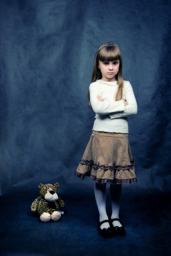

Взрослый человек может испытать чувство обиды в двух случаях
1. С тобой обошлись несправедливо (например пошел вечером за пивом, остановили гопники, забрали деньги). Это наверняка обидно и пива какое-то время пить не захочется
2. Ты не умеешь вкрутить лампочку, установить ICQ, поменять масло в машине, испечь торт, удовлетворить женщину. А в обществе принято иначе.

Цена питьевой привозной воды стоила 7 копеек серебром в год, по тем временам сумма довольно небольшая. Особо жадные водовозы завышали цену, за что их наказывали, забирая лошадь и заставляя возить бочки с водой на себе.
Тебе говорят: что же ты такой вырос, что не умееешь испечь торт. А ты хотел бы уметь, но как-то не срослось. Может родители виноваты, может мука в тот год с яйцами была дорогая, может рецепт тебе дали не тот, короче не умеешь.
Вся фишка в том, что во втором случае, человек обижается всегда на правду. Вернее ему обидна не сама правда, а как ему эту правду преподносят.
И вот этот вот в общем простой вопрос выбивает тебя из колеи и ходишь ты весь такой из себя обиженный.
По-моему это глупо, и мне кажется я себя от подобной реакции кажется отучил.